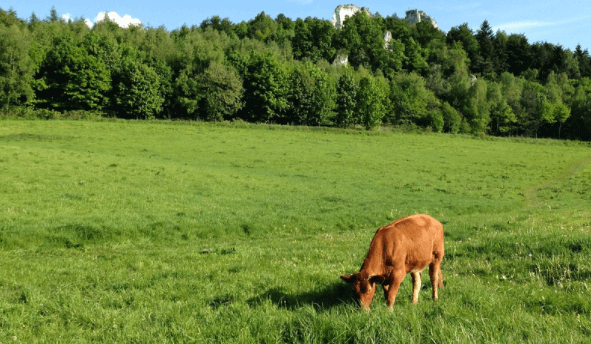

spiret, um cavalo veloz e corajoso,vive tranquilo na fazenda!ele encontra uma trilha desconhecida explorar?!
Durante a trilha aparece um rio, atravessar?
Relâmpago vê um lobo de longe!
Relâmpago decide voltar para a fazenda e fica com seus amigos

ir para o pasto
continuar no pasto
Explorando o pasto
sair do pasto
Você escapou e viveu feliz da vida!